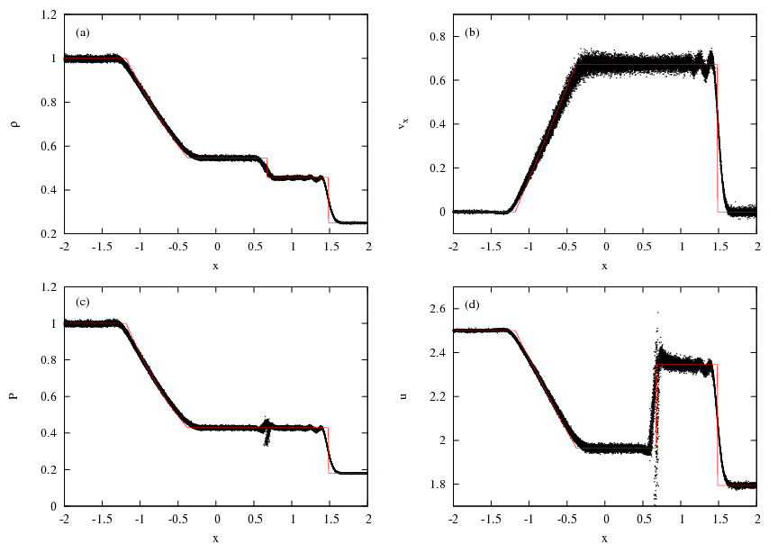
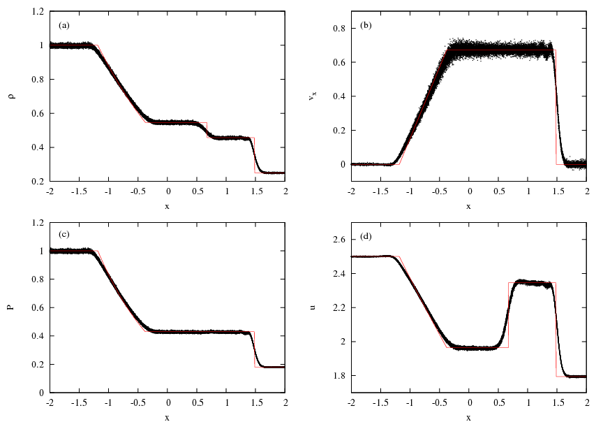
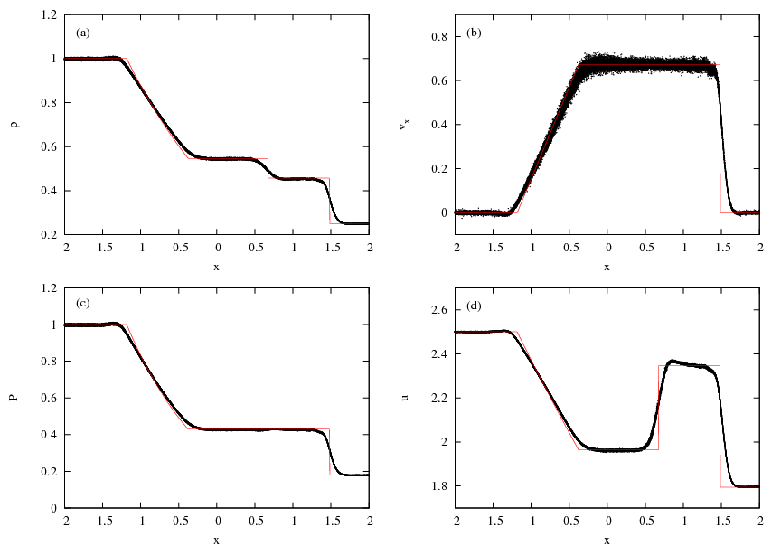
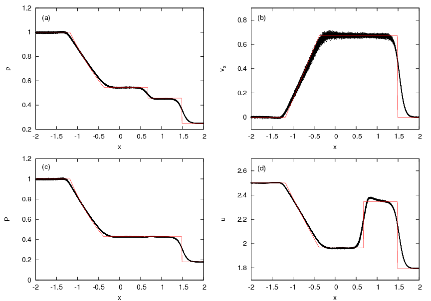
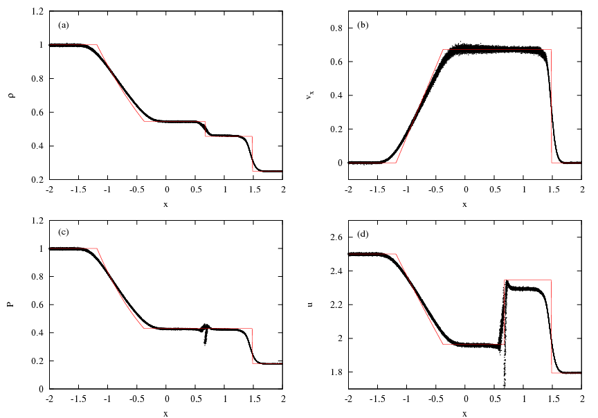
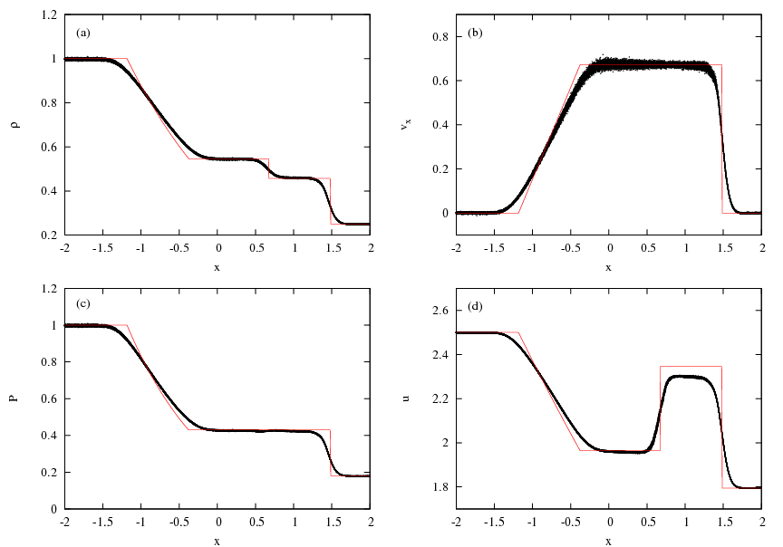

Adiabatic Sod shocktube test
The Sod test (Sod 1978)) is a classic test of hydro-codes often run to demonstrate that a code correctly models hydrodynamical interactions, in particular the formation of shocks. In this particular test, we assume the gas interacts adiabatically, i.e. work done by compression is converted into internal energy, rather than imposing an isothermal or barotropic equation of state which does not conserve energy. The initial conditions for the left and right-hand states of the shocktube are described in the table below. The ratio of specific heats for the gas is 1.4. The simulation is run until a time of t = 1.0 in each case. In all the figures showing the results of each test, we also display the semi-analytical results from a Riemann solver.
| x < 0 | x > 0 | |
|---|---|---|
| &rho | 1.0 | 0.25 |
| P | 1.0 | 0.1795 |
| vx | 0.0 | 0.0 |
The following code options are employed for all of the tests performed and described below.
- 3-dimensions
- Dimensionless code units
- M4 kernel with Thomas-Couchman modified gradient
- 2nd order Leapfrog kick-drift-kick integration scheme
- Periodic wrapping in the x-, y- and z-dimensions
- Hydro forces only
- Isothermal equation of state
- Global timesteps
- Barnes-Hut tree for neighbour-searching

{kind=link}
ADSOD-3D-AB
- 'grad-h' SPH formulation
- Standard alpha-beta artificial viscosity

{kind=link}
ADSOD-3D-AB-COND
- Standard SPH formulation
- Standard alpha-beta artificial viscosity
- Price (2008) artificial conductivity

{kind=link}
ADSOD-3D-GRADH-AB-COND
- 'grad-h' SPH formulation
- Standard alpha-beta artificial viscosity
- Price (2008) artificial conductivity

{kind=link}
ADSOD-3D-GRADH-MON-COND
- 'grad-h' SPH formulation
- Monaghan (1997) artificial viscosity
- Price (2008) artificial conductivity

{kind=link}
ADSOD-3D-GRADH-RIEMANN
- 'grad-h' SPH formulation
- Riemann solver

{kind=link}
ADSOD-3D-GRADH-RIEMANN-COND
- 'grad-h' SPH formulation
- Riemann solver
- Price (2008) artificial conductivity